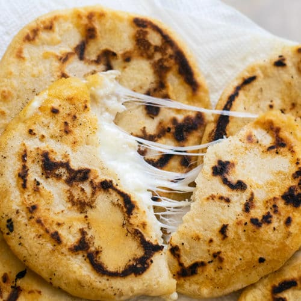
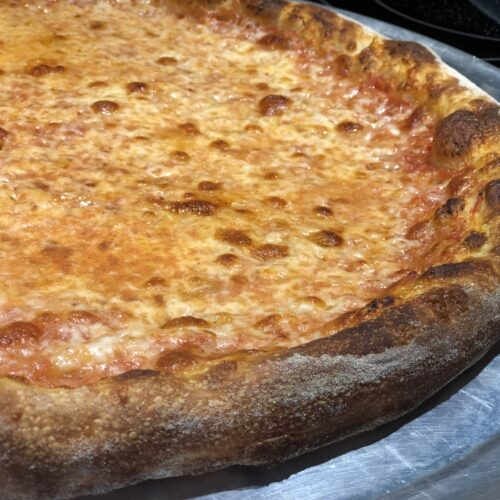
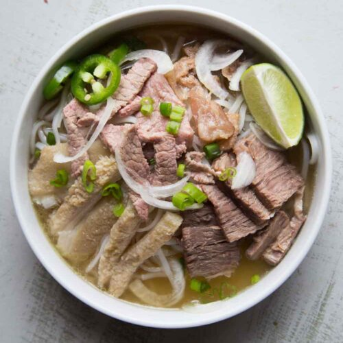
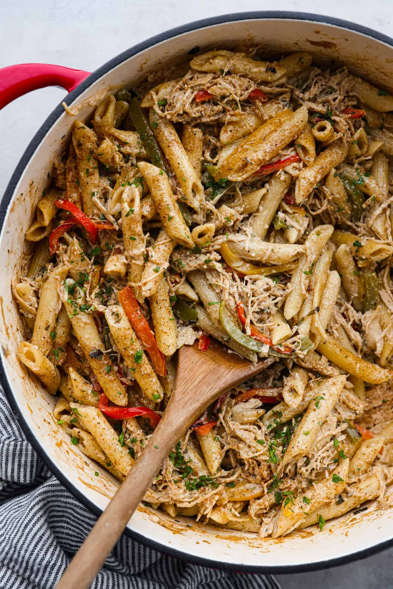
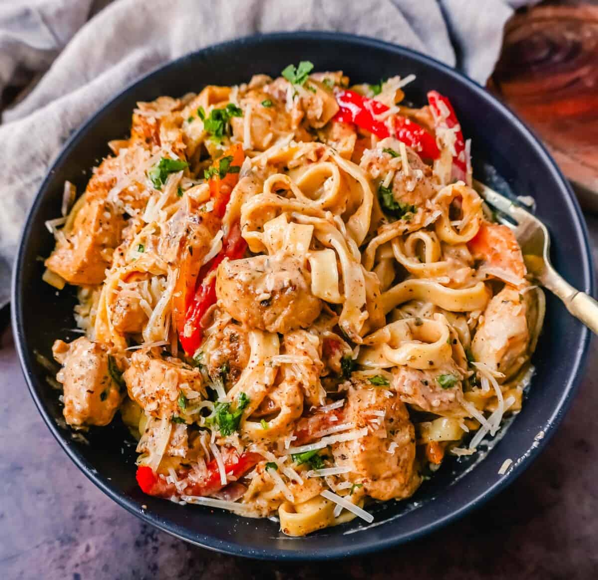

Culinary Chronicles: Showcasing the Best Food in the World
A website by: PARTNER 1 & PARTNER 2
These are Paul's top 5 cuisines
- Carribean
- Latin
- Vietnamese
- Italian
- Indian
These are Reese's top 5 cuisines
- Jamaican
- Italian
- Chinese
- Italian
- Chinese
Paul's top 3 dishes

- Pupusas

- Pizza

- Pho
Reese's top 3 dishes

- Rasta Pasta

- Steak

- Cajun Chicken
Reese's favorite recipes
- Some of my favorite Jamaican recipes are here
- Some of my favorite Italianrecipes are here
- Some of my favorite Chinese recipes are here